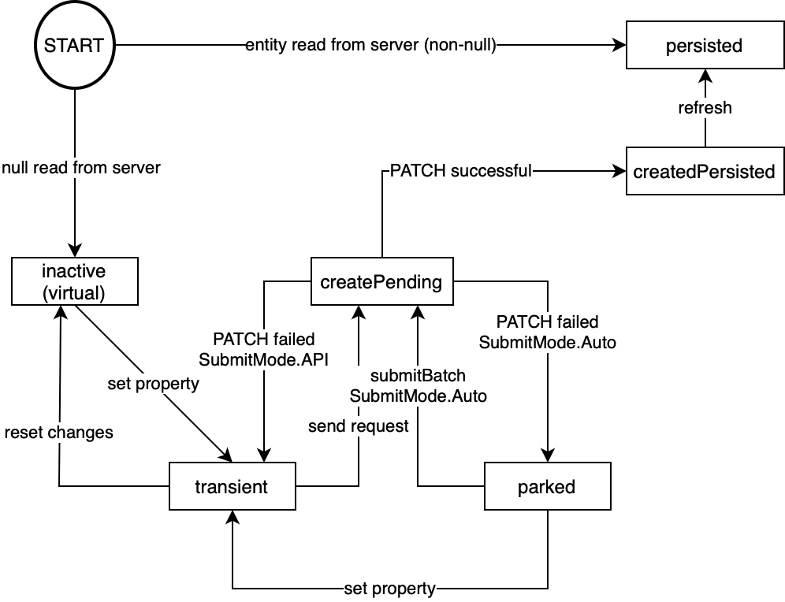

null value, you can create a new entity via a so-called "upsert" (an
update that does an insert ). Usually, no API is needed for this as two-way property bindings
are sufficient.
For creating a new entity inside a collection, that is, an entity set or a collection-valued navigation property, see Creating an Entity in a Collection.
Let's assume we have product entities with a collection of descriptive texts in different languages. Typically, only the text for the
current UI language can be maintained by an end user. Suppose Description is thus a single-valued navigation property
from the product entity to a description entity. Behind the scenes, a collection of descriptions is associated with a single product,
but that is of no concern to us here. Also, the description entity may have more properties like the language it represents etc., but
we are just interested in the actual Text property.
The following is an over-simplified XML view where the outer box represents an object page bound to a single product instance. The
interesting part of the UI is an input field with two-way data binding for the description's text. This of course works naturally in
case a description is already present: it can then be changed. The same is also possible when no description yet exists, that is, if
Description has a null value. When the end user enters some text into that input field, the V4
OData model creates a PATCH request for /Products('42')/Description with header If-None-Match:* to
tell the back-end service to create a new instance with the given text. That PATCH is accompanied with an appropriate GET to fetch the
needed properties from the service after the upsert. This is important in case more properties of the upserted entity are shown on the
UI, but also if the sent property itself has been changed, for example, due to auto-correction or -formatting. No side effects need to
be maintained for that.
XML View for Upsert
<FlexBox binding="{/Products('42')}">
<Input value="{Description/Text}"/>
</FlexBox>In addition to two-way data binding, an upsert can also be caused via the v4.Context#setProperty API. To undo an upsert that has not yet been sent to the
back end (mostly due to submit
mode=API), use v4.Context#resetChanges, v4.ODataModel#resetChanges, or the corresponding method at a context, list, or property binding. You cannot use v4.Context#delete for this purpose because the context itself should not be deleted, just
the (navigation) property changes related to it. Setting the Text property to null again does not
undo the upsert, and neither does setting Description to null.
Suppose there is an object binding for the input field as follows. In a similar fashion, there might be an intermediate control bundling a
number of input fields related to the same upsertable entity and again with an object binding to the corresponding single-valued
navigation property. In such cases, we can have a closer look at the v4.Context related to that v4.ODataContextBinding using this.oView.byId("input").getBindingContext().
Its state diagram is intentionally close to the one from Creating an Entity in a Collection.
XML View for Upsert With Object Binding
<FlexBox binding="{/Products('42')}">
<Input binding="{Description}" id="input" value="{Text}"/>
</FlexBox>As long as the single-valued navigation property (Description in our example) has a null value, the
context is in a kind of inactive state. The input field is ready for input, but no upsert has been created yet. Note that there is no
API or client-side annotation to observe that state beyond v4.Context#getObject returning null.
Once something has been entered for Text, the upsert's PATCH request is created and queued. The context now becomes transient,
and this can be observed as usual with v4.Context#isTransient. Depending on the submit mode, the
request is either sent automatically or v4.ODataModel#submitBatch is needed. A patchSent
event is fired as usual, followed by a patchCompleted. Depending on your binding structure, these events may be fired at a list binding
instead. When the PATCH fails, it will be retried as usual, either via the next user input (or property change, in general) or via
v4.ODataModel#submitBatch. Of course, bRetry has the usual effect in case the API is used.
If and when the entity has been successfully created in the back-end service, the context looks "createdPersisted". Use v4.Context#created
to wait for this to happen. This state is
preserved by some operations, but after a refresh the context will look just like any other context for a persisted entity loaded from
the back-end service.

An upsert cannot happen in a collection that does not send own requests. For example, the list binding of an items table for
Products with binding context /Category('23') needs to use $$ownRequest in order to upsert descriptions per product.
Upserts cannot be nested, that is, one cannot create an entity for Description and for Description/Detail in
the same upsert. There is no deep upsert, that is, there cannot be a table of Description/Details filled within the
upsert for Description. In both cases, Description needs to be created first and saved in the back
end before the next step.
The binding-specific parameter $$noPatch
is unsupported for upserts. The mixing of update group IDs related to the same upsert is not supported; this also holds for null vs.
non-null in the case of the v4.Context#setProperty API. As usual, side effects need to be requested with the same
(update) group ID as the one that caused the upsert; see sGroupId of v4.Context#requestSideEffects.
When the upsert is caused via API at a parent context of the context corresponding to the single-value navigation property, the actual "upsert context" is bypassed and does not become created or transient.